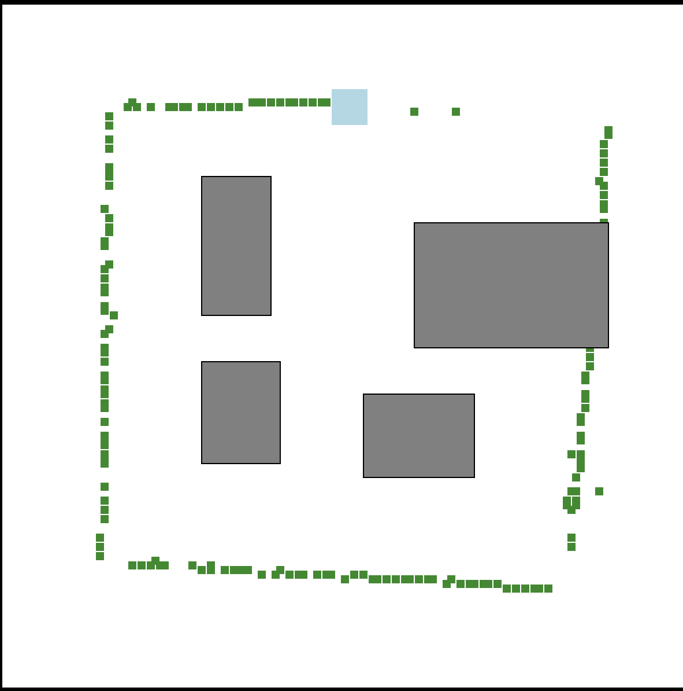
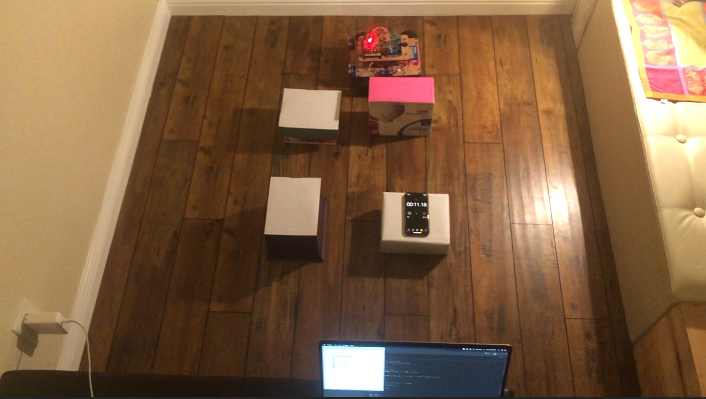
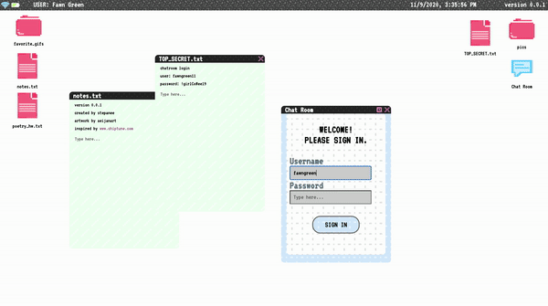
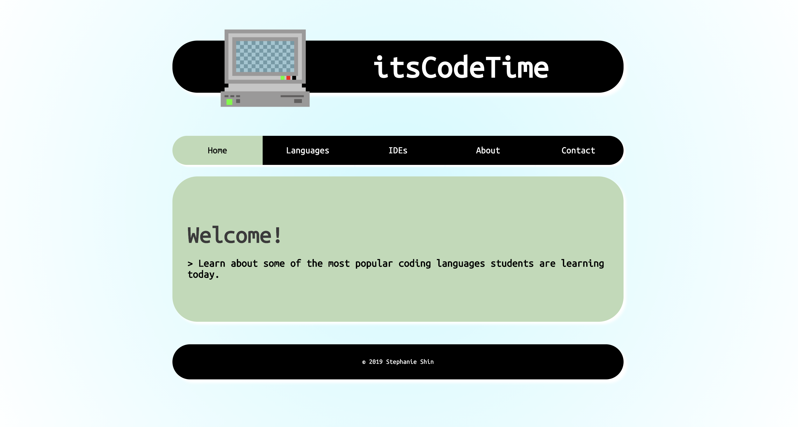

PROJECTS
Autonomous Car (GITHUB)
> DESCRIPTION: This team project won 2nd place (among 15 teams, all consisting of 3 team members) in a remote hackathon (~50 hours). The objective was to create an autonomous car that mapped obstacles within its arena.
> TECHNOLOGIES USED: Python, Arduino, Solidworks
> DATE: September 2020
> The mapped algorithm on the final run. (blue = car, green = car's path, grey = obstacles)
> The car, arena, and obstacles.
2D Space Shooter Game (GITHUB)
> DESCRIPTION: This team project won 1st place (among 3 teams, all consisting of 3 team members) in a computer science boot camp competition. We were given creative freedom to develop a game in C++ that demonstrated the use of data structures and inheritance.
> TECHNOLOGIES USED: C++
> DATE: AUGUST 2020
> Game demonstration, played using the arrow keys to move up and down, and the space bar to shoot rockets.

Fawn Files (SITE/GITHUB)
> DESCRIPTION: Fawn Files is an interactive website I created from the ground up as the sole developer and designer. It mimics a desktop with moveable windows and a chatbot application.
> TECHNOLOGIES USED: HTML/CSS/JS
> DATE: March 2020 – May 2020

itsCodeTime (SITE/GITHUB)
> DESCRIPTION: itsCodeTime is named as a homage to one of my favorite childhood TV shows, Adventure Time! It was a personal project to learn website development on my own. It is an informational website that describes various coding languages for new coders.
> TECHNOLOGIES USED: HTML/CSS
> DATE: August 2019 – March 2020

This website! (GITHUB)
> TECHNOLOGIES USED: HTML/CSS
> DATE: September 2020 - October 2020